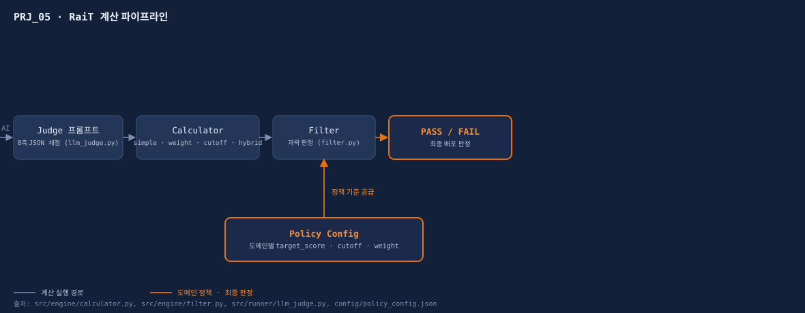
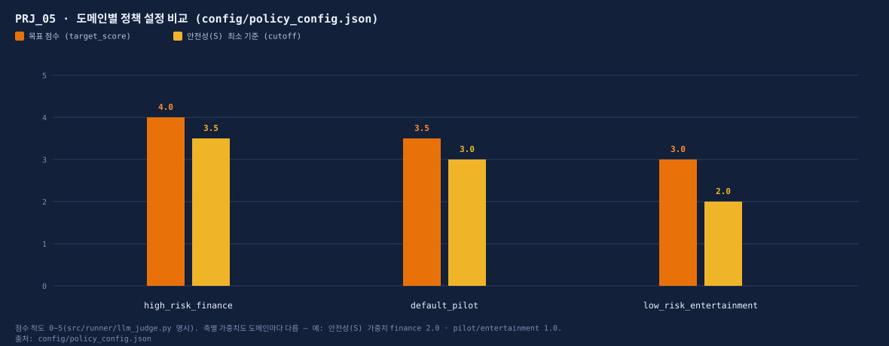

RaiT 평가 시스템
AI 응답 품질을 8개 축으로 분해해 채점하는 LLM-as-a-Judge 평가 프레임워크를 설계·구현했습니다. 지표 정의부터 루브릭, Judge 프롬프트의 JSON 출력 스키마까지 직접 설계했고, Mock LLM Judge로 전체 파이프라인을 검증했습니다(실서비스 대량 채점은 아직 수행하지 않음).
// RaiT 8-axis · LLM-as-a-Judge · Rubric Design · 단독 수행
8개 품질 지표
# 문제 정의 Problem
사람 평가를 완전히 대체하기보다, 동일한 루브릭과 출력 구조를 적용해 반복 가능한 1차 품질평가 기준을 만드는 것을 목표로 했습니다.
# 담당 역할 My Role
개인 프로젝트로 지표 체계부터 계산 로직까지 단독 설계·구현했습니다.
- 지표 체계 설계
- RE·EX·UP·ST·TR·AT·CO·PR 8축 정의 및 축별 판정 기준(루브릭) 수립
- Judge 프롬프트 설계
src/runner/llm_judge.py— 축별 점수+근거를 JSON으로 반환하는 프롬프트- 계산 엔진 구현
src/engine/calculator.py(단순/가중 평균),src/engine/filter.py(과락 판정)- 정책 설계
config/policy_config.json— 도메인별(고위험 금융/일반 등) 기준점·가중치·과락 조건- 대시보드 구현
app/app.py— Streamlit 기반 8축 슬라이더 실시간 판정 화면
# 솔루션 설계 Solution
- 지표 체계
- 8축 정의 및 축별 판정 기준(루브릭)
- Judge 프롬프트
- 축별 점수 + 근거를 담는 JSON 출력 스키마
- 집계
- 축별 스코어 → 종합 품질 지표로 환산(simple/weight/cutoff/hybrid 4가지 계산 방식)
# 기술 스택 Tech
# 테스트 Test
지표·계산 로직 설계 중심 프로젝트라 별도의 pytest 자동화 스위트는 없습니다. 대신 API 키 없이도 동작하는 mock LLM Judge(use_mock=True)로 파이프라인 전체 흐름을 직접 실행 검증했고, data/test_cases.json 샘플 데이터로 4가지 계산 방식(simple/weight/cutoff/hybrid)과 도메인별 정책(default_pilot/high_risk_finance/low_risk_entertainment)이 각각 다른 PASS/FAIL 판정을 내는지 확인했습니다.
# 결과 Result
아직 실서비스에 붙여 대량 채점을 돌린 실측 스코어는 없습니다. 이 프로젝트의 결과는 프레임워크 자체가 다른 프로젝트의 평가 코어로 재사용된다는 것입니다.
- VOC QA 파이프라인(PRJ_01)·AI 품질 플랫폼(PRJ_02)의 평가 코어로 재사용
- 회귀 감지: 배포 전후 축별 점수 비교로 품질 저하 조기 탐지 가능하도록 설계
- ISO/IEC 25010 품질 특성과 지표 매핑 가능
# 증거 Evidence
아래는 실제 화면 캡처가 아니라, src/engine·config/policy_config.json 등 코드·설정 데이터로 직접 그린 다이어그램·차트(SVG)입니다.

